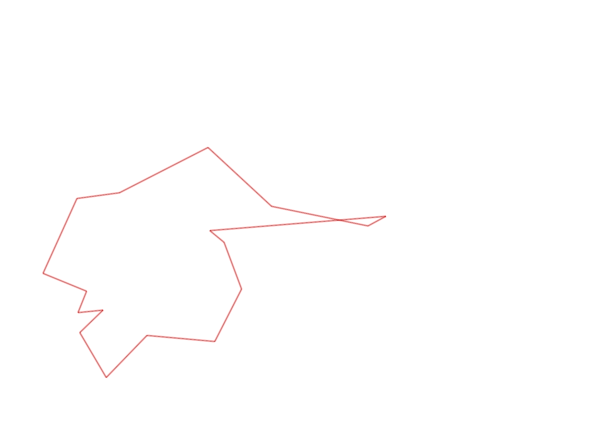
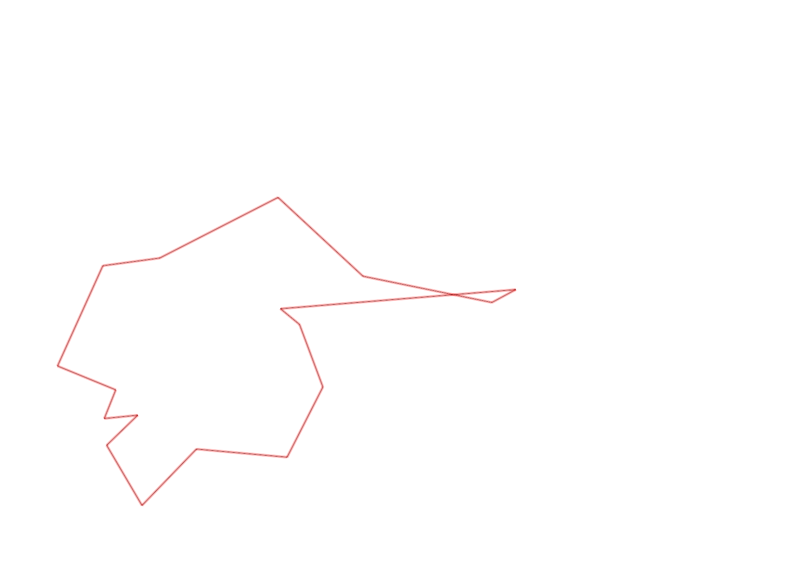

| Control |
Points |
Time Punched |
Distance |
Your Time |
Pace |
Place |
Fastest Time |
Median Time |
% Behind Fastest |
| 127 |
20 |
|
0.06 |
0:00:29 |
08:03 |
14 / 30 |
0:00:01 |
0:00:32 |
2800% |
| 42 |
40 |
|
0.17 |
0:01:48 |
10:35 |
9 / 20 |
0:01:06 |
0:01:52 |
63% |
| 61 |
60 |
|
0.21 |
0:03:40 |
17:27 |
11 / 20 |
0:02:20 |
0:03:34 |
57% |
| 59 |
50 |
|
0.24 |
0:02:16 |
09:26 |
6 / 19 |
0:01:47 |
0:02:30 |
27% |
| 77 |
70 |
|
0.21 |
0:02:28 |
11:44 |
7 / 17 |
0:01:25 |
0:02:33 |
74% |
| 40 |
40 |
|
0.18 |
0:02:39 |
14:43 |
10 / 18 |
0:01:16 |
0:02:38 |
109% |
| 41 |
40 |
|
0.11 |
0:00:46 |
06:58 |
8 / 20 |
0:00:28 |
0:01:07 |
64% |
| 71 |
70 |
|
0.09 |
0:01:10 |
12:57 |
5 / 12 |
0:00:33 |
0:01:12 |
112% |
| 54 |
50 |
|
0.08 |
0:00:37 |
07:42 |
9 / 33 |
0:00:27 |
0:00:45 |
37% |
| 53 |
50 |
|
0.16 |
0:02:55 |
18:13 |
2 / 2 |
0:01:56 |
0:02:25 |
50% |
| 32 |
30 |
|
0.29 |
0:01:51 |
06:22 |
1 / 3 |
0:01:51 |
0:02:25 |
0% |
| 63 |
60 |
|
0.15 |
0:04:59 |
33:13 |
25 / 25 |
0:01:05 |
0:01:29 |
360% |
| 107 |
100 |
|
0.35 |
0:05:43 |
16:20 |
21 / 22 |
0:02:14 |
0:03:49 |
155% |
| 92 |
90 |
|
0.3 |
0:08:35 |
28:36 |
1 / 1 |
0:08:35 |
0:08:35 |
0% |
| 48 |
40 |
|
0.34 |
0:08:46 |
25:47 |
1 / 1 |
0:08:46 |
0:08:46 |
0% |
| 64 |
60 |
|
0.07 |
0:01:22 |
19:31 |
12 / 14 |
0:00:38 |
0:01:05 |
115% |
| Finish |
0 |
|
0.62 |
0:07:59 |
12:52 |
2 / 2 |
0:05:25 |
0:06:42 |
47% |
Total Distance Covered: 3.63km
Points Scored: 870
Late Penalty: 0
Final Score: 870
Total Time: 0hours 58minutes 3seconds
Efficiency: 239.67 points/km
 
